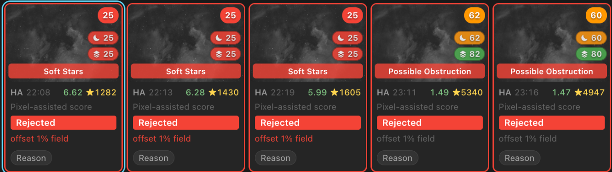
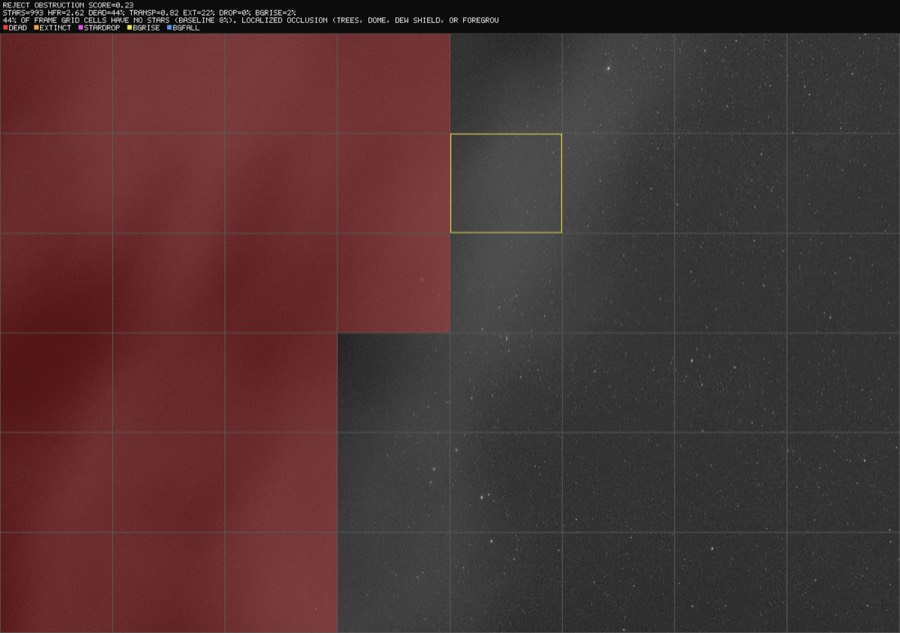
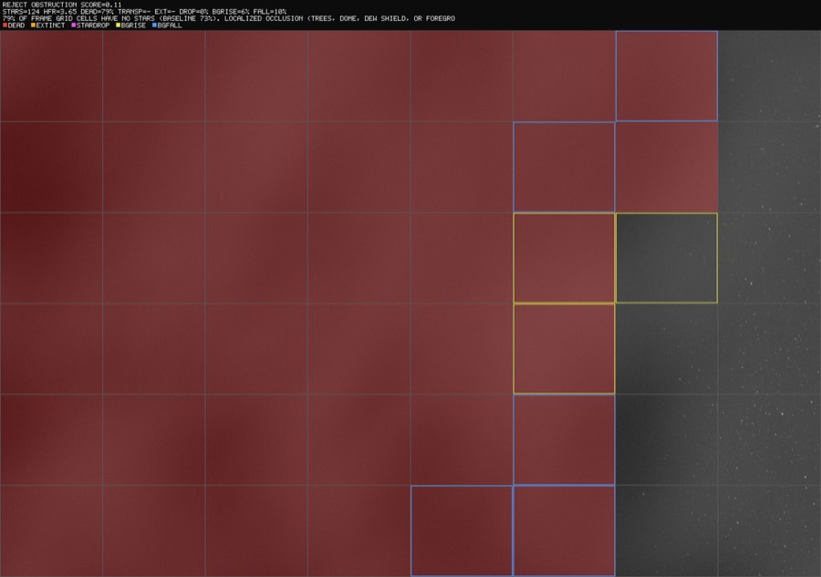
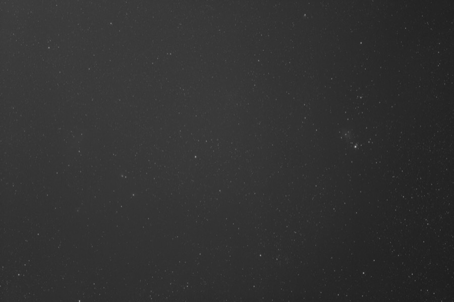
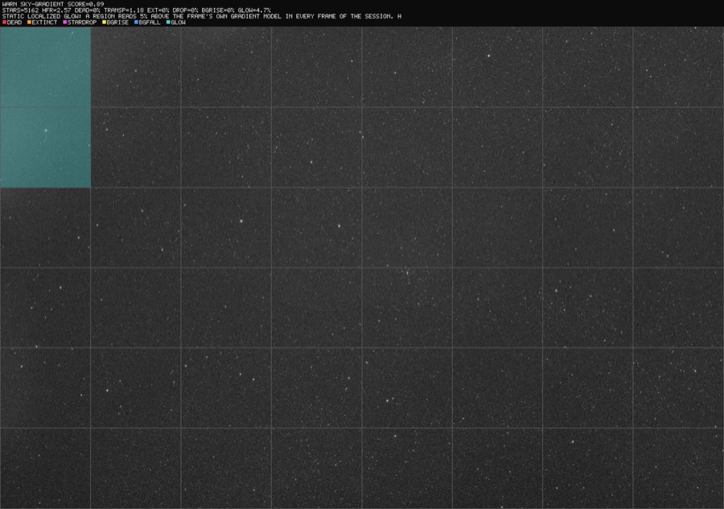

Quality Screening
A quality scan measures each light frame's stars, sky, photometry and plate solve, then scores the frame against its session and its whole target. This page covers what the scan catches, how scores and causes work, and how to run it from the app or the CLI.
Run a quality scan
The button shows in Images and Sequence when the target has new frames or results from an older quality model, and hides when every frame is up to date.
The scan runs in the background: spatial and photometric screening, then a fresh plate solve of each frame, then new sequence scores. Both stages work on several frames at once, up to the share set in Settings → Performance → Processor use. The header's jobs chip shows progress from any view and any database. A scan with failed frames leaves a note on the chip, with a link to the target's sequence, until you dismiss it; with nothing else running the chip reads Finished with errors. Results persist across restarts.
Settings → Databases holds the database-wide actions. Analyze Missing Quality scans frames that have no results. Rescan All Quality forces a full rescan. Analyze new frames as they arrive scans frames that come by sync, peer pull, remote upload or auto-import a few minutes after they land. See Import Images.

Sequence shows coverage badges, causes, a solved-center scatter, a session view, and a stack comparison across all sessions for each filter. When the analysis names a cause, the same cause and its evidence appear on the Sequence card, the grid card and the image detail panel. For a local finding, image detail offers Show affected regions: the 8×6 scan cells behind the finding, with a legend. A whole-frame finding, such as a thin veil, has no region to draw.

In Images, Flag narrows the grid to frames with any of the causes you tick. The grid scores one target, project or database at a time and never compares frames from unrelated targets. It reads stored metadata and cached evidence and does not start a scan, and it says how many visible frames stay unscored for lack of a comparable sequence or evidence.
To reject in bulk, pick a preset from Select: in Sequence (Below score threshold, Clouded, Off target, Unsolved or Recommended), then click Review rejection. Nothing is written until you confirm in the review. See Astrometry Quality.
Add --regrade-db for target-aware checks and grade proposals.
# Screen a night of lights (no database needed)
psf-guard screen-fits "/path/to/2026-06-30/LIGHT"
# Render an annotated diagnostic PNG for every WARN/REJECT frame
psf-guard screen-fits "/path/to/LIGHT" --annotate /tmp/diagnostics
# Add target-aware astrometry and propose/write supported [Auto] rejections
# (dry-run first; frames matched by filename AND capture timestamp)
psf-guard screen-fits "/path/to/LIGHT" --regrade-db my-db-slug --dry-run
psf-guard screen-fits "/path/to/LIGHT" --regrade-db my-db-slug
# Then archive the rejected files out of your stacking tree
psf-guard move-rejects --db my-db-slugCLI screening reports OK, WARN and REJECT verdicts. A scan you start from the app may download the orbital elements it needs for satellite checks; opening Sequence and CLI regrades use the cache only. See Satellite Tracks.
Why star count and HFR are not enough
Star count and HFR barely move when part of a frame is ruined. On a real session where a tree line slowly covered the field:
- Frames with a blocked corner kept star counts within normal variation, because the rest of the field was clear.
- HFR stayed near 2.6 until more than 60% of the frame was blocked. The stars that remained were still in focus.
- A thin veil dimmed every star by 37% while star count, HFR and background looked normal. The capture software accepted the frame.
- N.I.N.A.'s rolling star-count baseline followed the slow occlusion and accepted 31 of 33 blocked frames, one of them 90% blocked.
The scan answers with signals that are local (per grid cell), photometric (flux ratios, not counts) and temporal (each cell against its own history), with baselines that do not absorb a slow-growing fault.
Detection signals
| Signal | Catches | How |
|---|---|---|
| Dead cells | Occlusion (trees, dome, dew shield) | Share of the 8×6 grid cells whose star density collapsed against the frame's median cell. |
| Transparency | Thin uniform veils | Median flux ratio of stars matched against a reference catalog for the sequence. 0.7 means the whole frame is about 0.4 mag dimmer. |
| Localized extinction | Small clouds | Flux ratio per cell divided by global transparency. A passing cloud shows as a dip in one patch of stars. |
| Star-share drops | Small opaque clouds | Each cell's share of the frame's stars against that cell's own median over time, allowing for Poisson noise. |
| Background rise | Stray light (headlights, flashlights) | Background per cell against the cell's own history, after removing the frame's gradient with a robust plane fit. |
| Background fall | Dark occluders, cloud shadow | The same, downward: something blocking skyglow reads darker, not milky. |
| Static glow | Corner haze, lit occluder edges | Cells brighter than the frame's own gradient model. Catches faults present from a session's first frame. A fresh solve excuses cells covered by large cataloged emission nebulae. |
| SNR | Haze, dew, a brighter sky | Flux promised by the frame's Gaia zero point divided by its sky noise. See SNR. |
| Fresh plate solution | Off-target frames, pointing jumps and drift, rotator slips, failed solves | Seiza solves the current pixels. Solved centers and rotations are compared with the target, stable framing clusters, and drift within a segment. See Astrometry Quality. |
| Satellite prediction and pixel alignment | Bright satellite trails | Cached orbital elements are projected through the solved field for the exposure, then the nearby pixels are searched for a matching trail. See Satellite Tracks. |
Scores and causes
Each frame gets two scores from 0 to 1:
- The session score compares frames from one capture run. It catches a cloud, focus change or tracking loss within a night.
- The all-sessions score compares every frame that could enter one stack, across nights, with matching exposure, gain, offset, binning, readout and sensor region. It exposes a weak night that looked stable on its own. A capture profile needs at least three matching frames across two sessions; one with fewer is listed, not given a perfect score. Stacks use this score to choose a reference frame.
Both are relative ranks, not verdicts. Star count, HFR, eccentricity, SNR and background are compared with a robust good reference, and normal variation costs nothing. A scan adds spatial, photometric and plate-solve evidence. Missing evidence gets no weight: the score renormalizes over what was measured, so a frame is never marked down because an optional scan has not run. When a fresh solve puts a large emission nebula in the field, raw background gets no weight, since lower background can mean lost target signal.
Cards say Catalog-relative score until a scan adds pixel evidence, then Pixel-assisted score.
A low score alone names no fault and recommends nothing. A frame gets a cause only when its detector has enough evidence, and reject recommendations follow causes, not scores:
| Kind | Causes |
|---|---|
| Sky and optics | Likely Clouds, Possible Obstruction, Sky Brightening, Focus Drift, Soft Stars |
| Mount and rotator | Tracking Error, Wind Shake, Off Target, Stable Offset, Pointing Jump, Pointing Drift, Rotation Skew, Plate Solve Failed |
| Events | Satellite Trail Detected |
| Absolute checks | No Stars Detected, HFR Above Limit, Star Count Below Limit, Sensor Temperature |
| Other | Unknown Degradation |
One absolute rule: a frame measured with zero stars is capped at a failing score with a No Stars Detected cause, even with no other frames to compare. Zero stars in a light frame is direct evidence of clouds, trailing or a blocked aperture. A frame with no star measurement at all is never capped. When the scan finds no stars where the capture software counted 20 or more, the scan failed: its star count, HFR and dead cells are dropped for that frame, and the score renormalizes around them. The same holds the other way round.
Sessions split at a Target Scheduler session change, a capture-profile change, or a 60-minute gap. Frames measured from calibrated pixels (a light catalogued from its calibrated copy, or measured from one) are scored only against each other, in sessions and stack comparisons of their own. Their background, flux and star counts differ from raw frames of the same sky, so they are no longer marked down beside them.
SNR from the Gaia zero point
Capture software rarely records an SNR, so the quality scan measures one. It finds the frame's photometric zero point, the catalog magnitude of a star that gives one ADU per second, and divides the flux that zero point promises by the pixel-to-pixel sky noise.
- Measure up to 80 of the brightest unsaturated stars in a wide aperture: five times the frame's HFR, with a sky annulus from six to eight. Saturation is judged on the raw pixels, since a deep frame clips hundreds of its brightest stars.
- After the plate solve, place Gaia stars with the frame's own solution and match them to the measured stars.
- Take the median of magnitude + 2.5·log10(flux per second) as the zero point.
Cloud, haze and dew lower the zero point, and a brighter sky raises the noise, so SNR falls with either. A frame dimmed by haze or shot under a brighter sky scores lower than frames of the same exposure from any night. Soft focus does not move SNR: the wide aperture holds a star's light whatever its size, and HFR already scores focus. The zero point needs no reference frame, so nights and both sides of a meridian flip compare directly; scoring still compares it only between frames of the same exposure and settings.
SNR needs a fresh plate solve and a Gaia star catalog. A Tycho-2 catalog mixes two bands and is not used. An SNR already in the image metadata is used as recorded.
force: true to the quality-scan API, to measure it.
Soft stars
HFR is judged against the whole target, not the night. PSF Guard compares a frame's HFR with the best of its target and filter across every night: the 10th percentile, once a capture profile has ten measured frames. Against its own night, a whole night of poor seeing or lost focus looks normal, and as one part of eight in the score, an HFR twice the best still left a frame near 0.8.
| HFR against the target's best | Effect |
|---|---|
| Up to 1.5× | None |
| Over 1.5× | Score capped, with a Soft Stars cause. The cap falls from 1.0 at 1.5× to the reject level (0.25) at 2×. |
| From 1.75× | [Auto] reject recommendation; stacks leave the frame out. |
| 2× and beyond | Capped at the reject level. |
[Auto] Soft stars - HFR 4.10 px, 1.8× the target's best 2.28 pxOn one rig's catalog, 96.7% of frames sat within 1.3× of their best, and 1.5% beyond 1.5×.

One star count per target
The quality scan and the capture software count stars on different scales. HocusFocus and N.I.N.A.'s own detector differ several-fold, and a rig's settings can change between nights. Mixing the two dragged down whole nights on rigs where they differ, so a target's frames are compared on one source per filter:
- The scan's values when at least as many frames have a scan count as were measured only by the capture software; otherwise the capture software's.
- A failed scan counts on neither side. A rig whose every scan fails is scored on the capture software's counts.
- Values the scan wrote back into imported metadata count as the scan's.
- With the scan's values, a frame whose scan failed or has not run yet is left unmeasured, so a new frame waiting for its scan does not change how the rest score.
- A frame that can never be scanned, because its file is offline, loses its star dimension once most of its target is scanned.
Max HFR, Min stars and the zero-star cap still judge each frame on its own measurement: the scan's when it counted stars, else the capture software's.
Guards against false zero-star records
- Files still copying. A frame written within the last hour whose data ends in a long run of one value is taken as a copy under way, and measured on a later pass. Windows copies, sync tools and moves between volumes create the file at full size and fill it in after.
- HocusFocus fallback. Before it records no stars, the scan runs HocusFocus on the same pixels. If HocusFocus finds 20 or more, the frame has stars and is poor, not starless. It scores on HocusFocus's count, so a frame with a few dozen stars beside frames with hundreds scores low. Its HFR is shown but not scored, since HocusFocus measures HFR on another scale, and neither number is written into the catalog. The details say which detector counted, for example "N.I.N.A. Fast found no stars; HocusFocus found 68, used instead."
- Frames of one value. A frame whose pixels mostly share one value does not have its noise counted as stars.
- Changed files. A scan taken from a file that has changed since is measured again the next time the target is scanned, and the values it wrote back are replaced.
Penalties and reject limits
The Scoring control in Sequence sets how hard event evidence hits the score, and optional fixed limits like N.I.N.A.'s subframe selection.
| Setting | Default | Effect |
|---|---|---|
| Satellite trails | 100% | Score hit for a pixel-confirmed trail. At 0%, trails neither lower the score nor drive reject recommendations, but a confirmed trail still shows as a warning. Useful when stacking removes trails. |
| Pointing | 100% | Score hit for off-target, pointing-jump, pointing-drift and corroborated solve-failure evidence. At 0% it also stops driving reject recommendations. |
| Temporal anomalies | 100% | Score hit when a frame suddenly departs from its neighbours. |
| Max HFR | Off | Reject any frame whose measured HFR (pixels) is over the limit. |
| Min stars | Off | Reject any frame with fewer detected stars than the limit. |
Penalties run from 0% (ignore the evidence) to 200% (double the hit). A frame past a reject limit is capped and gets an [Auto] reject recommendation, whatever the rest of the sequence looks like. A frame missing the measurement is exempt.
One limit is always on: Sensor Temperature. A frame whose sensor ran more than 10 °C warmer than the median of its session, or more than 20 °C above the cooler's set point, is capped and recommended for rejection. Dark current and hot pixels climb steeply with temperature, and no dark shot at the set point removes them. Colder never flags, and a frame with no temperature reading is exempt.
The settings are remembered and apply to Sequence, grid badges and image detail, so a frame scores the same everywhere. The zero-star cap does not scale. The CLI takes --ignore-satellites, --max-hfr and --min-stars; API callers pass penalty_satellite, penalty_pointing, penalty_temporal, hfr_reject_above, star_count_reject_below or sensor_temp_tolerance_c.
Read the annotated diagnostics
--annotate renders each flagged frame with the analysis grid on top. Cells are marked by the signal that fired, and the caption strip gives the verdict, score, frame metrics and the classifier's explanation.
| Marking | Meaning |
|---|---|
| Red fill | Dead cell: star density collapsed (occlusion). |
| Orange fill | Localized extinction: stars dimmed by a small cloud, labelled with the cell's flux ratio. |
| Magenta fill | Sudden drop in the cell's share of stars. |
| Yellow border | Background rise against the cell's history (stray light). |
| Blue border | Background fall against the cell's history (dark occluder, cloud shadow). |
| Cyan fill | Static glow above the frame's own gradient model. |
Occlusion arriving

Heavy occlusion with a lit edge

The occluder's edge

Thin cloud veil


No cell is marked, because nothing is wrong locally. Only the matched-star flux ratios see the veil. Conventional grading accepted this frame.
Static corner glow

Real nebulae can make the same stable shape. When a fresh solve projects a large emission nebula across a bright cell, PSF Guard treats that cell as explained and keeps any bright cells outside it. Only solved geometry does this; a target name or FITS header does not silence the detector.
Tune the detectors
Defaults were calibrated against measured clean-frame envelopes: 42 frames and more, four nights, several filters.
| Knob | Default | Notes |
|---|---|---|
--min-score | 0.35 | Composite score below which a frame is rejected. |
--dead-cell-rise | 0.08 | Occlusion sensitivity. Clean-frame jitter is 0.04 or less, so 0.08 leaves a 2× margin. |
--session-gap | 60 min | Gap that splits a sequence into sessions. |
--max-hfr | Off | Reject any frame whose HFR (pixels) is over this. |
--min-stars | Off | Reject any frame with fewer detected stars than this. |
--ignore-satellites | Off | Ignore satellite-trail evidence in scores and rejections. Trails still show as warnings. |
| Glow threshold | 2.5% of sky and >30 ADU | The ADU floor ignores weak structure; fresh solved geometry handles bright, large nebulae. True haze measured 48–103 ADU. Rig-specific: tune glow_min_adu for your camera and exposures. |
| Transparency threshold | 0.80 | Global veil rejection level. |
Safety rules
- Regrades match on two keys. File name and capture time (within ten minutes) must both agree, so screening the wrong folder cannot regrade the wrong row. Rows already Rejected are never touched.
- Fresh pixels decide. Embedded FITS WCS and coordinate-only catalog matches are never grading evidence. A scan solves the current pixels, and cached solves are tied to the file and the solver resources.
- A lone failed solve does not reject. It lowers the score, but rejection needs separate evidence of degradation. Missing catalogs, decode failures and other operational errors abstain.
- Baselines move on. A run of odd frames longer than
baseline_freeze_max_frames(15 by default) becomes the new normal, so a lasting change such as moonrise cannot condemn the rest of a night. Occluded frames stay penalized by the absolute spatial term. - Sparse fields abstain. Star-grid metrics stay silent on frames with few stars (narrowband, short frames on slow optics) instead of reporting false dead cells.
- Single-frame blips do not reject. Occlusion needs a neighbouring frame to agree. Photometric cloud calls rest on many stars' flux and may stand on one frame, since clouds move.
Limitations
- The server scan uses N.I.N.A. Fast for star count and HFR, which matches a rig running N.I.N.A.'s built-in detector. A rig on HocusFocus counts on another scale, which is why a target is scored from one source at a time. The same full-resolution aperture gives the flux for photometry.
screen-fitsdoes flux photometry with either detector. - The photometric reference needs stars present in at least half of a session's frames, so it cannot see regions blocked for most of a sequence. The dead-cell metric covers that case.
- Raw one-shot-color FITS or XISF files need a recognized
BAYERPATheader. PSF Guard debayers them to luminance for measurement, and the diagnostics stay luminance views. - The glow ADU floor depends on the rig and exposure profile.
Full technical notes: docs/SCREENING.md.